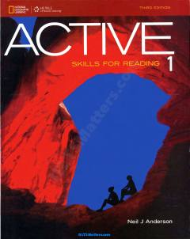

ASIngliz tilida o'qish ko'nikmalarini rivojlantirish uchun mo'ljallangan samarali o'quv qo'llanma.
Ushbu kitob ingliz tilini o'rganuvchilar uchun o'qish ko'nikmalarini rivojlantirishga qaratilgan samarali metodik qo'llanmadir. Unda Neil J. Andersonning ACTIVE yondashuvi asosida lug'at boyligini oshirish, matn mazmunini tushunish va o'qish tezligini yaxshilash bo'yicha amaliy mashqlar jamlangan.